|
3-5-2
|
United States | 2 | - | 0 | Australia |
5-4-1
|
| HT 2-0 | ||||||
|
FIFA World CupFriday 19 June 2026
|
||||||
- Venue
- Seattle Stadium
- Attendance
- 66,925
- Referee
- Felix Zwayer
Own goal11'
C. Burgess
Goal43'
A. Freeman
Yellow card56'
A. Robinson
Substitution74'
R. Pepi
S. Berhalter
- 2
Substitution80'
S. Dest
J. Scally
A. Robinson
A. Trusty
Yellow card89'
F. Balogun
Yellow card90+3'
C. Richards
- 2
Substitution90+6'
F. Balogun
H. Wright
W. McKennie
G. Reyna
Whistle45+8'
45+8'
Yellow card16'
J. Bos
Yellow card32'
A. Circati
- 3
Substitution46'
C. Burgess
J. Geria
N. Velupillay
C. Metcalfe
M. Touré
N. Irankunda
Substitution61'
M. Leckie
C. Volpato
Substitution78'
P. Okon-Engstler
J. Irvine
Yellow card88'
H. Souttar
Yellow card89'
J. Italiano
United States | |
|---|---|
Goalkeeper | |
| 24 | M. Freese |
Defender | |
| 3 | C. Richards 90+3' |
| 13 | T. Ream |
| 16 | A. Freeman 43' |
Midfielder | |
| 2 | S. Dest 80' |
| 4 | T. Adams |
| 5 | A. Robinson 56'80' |
| 8 | W. McKennie 90+6' |
| 17 | M. Tillman |
Forward | |
| 9 | R. Pepi 74' |
| 20 | F. Balogun 89'90+6' |
Substitutes | |
| 6 | A. Trusty 80' |
| 7 | G. Reyna 90+6' |
| 14 | S. Berhalter 74' |
| 19 | H. Wright 90+6' |
| 23 | J. Scally 80' |
Australia | |
Goalkeeper | |
| 18 | P. Beach |
Defender | |
| 3 | A. Circati 32' |
| 4 | J. Italiano 89' |
| 5 | J. Bos 16' |
| 19 | H. Souttar 88' |
| 21 | C. Burgess 11'46' |
Midfielder | |
| 7 | M. Leckie 61' |
| 13 | A. O'Neill |
| 23 | N. Velupillay 46' |
| 24 | P. Okon-Engstler 78' |
Forward | |
| 9 | M. Touré 46' |
Substitutes | |
| 6 | J. Geria 46' |
| 8 | C. Metcalfe 46' |
| 17 | N. Irankunda 46' |
| 20 | C. Volpato 61' |
| 22 | J. Irvine 78' |


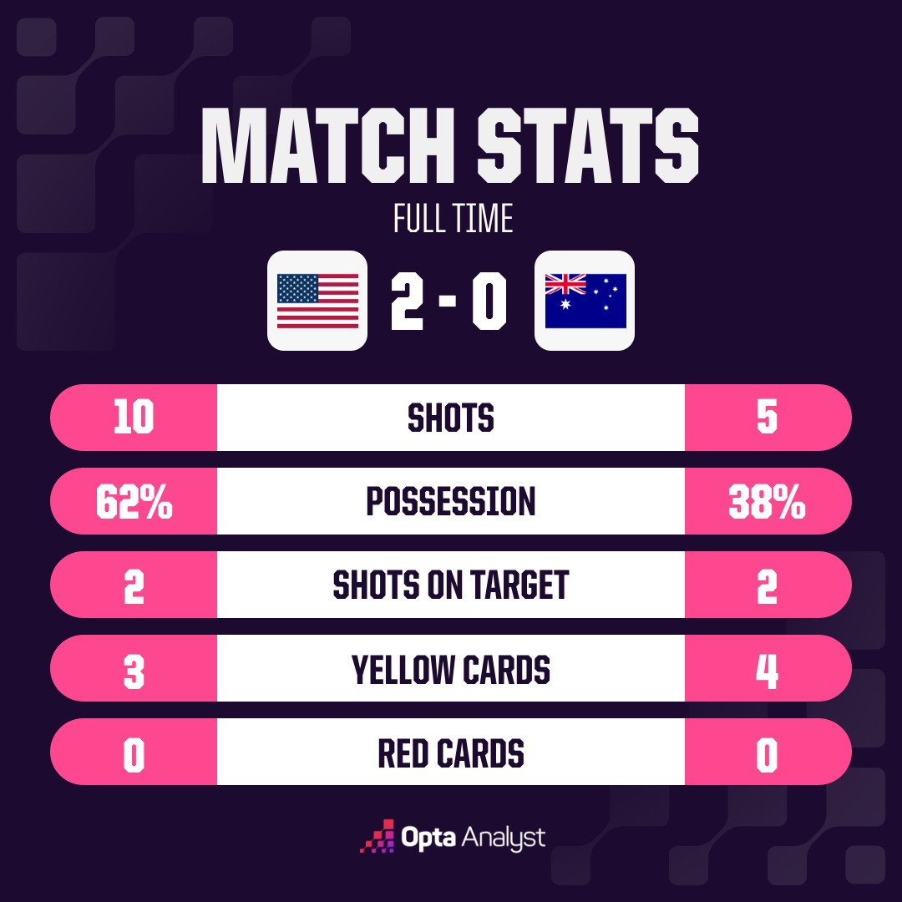
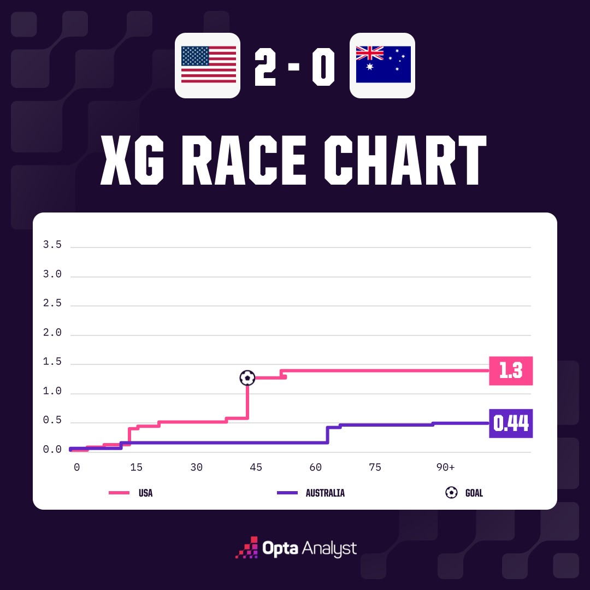
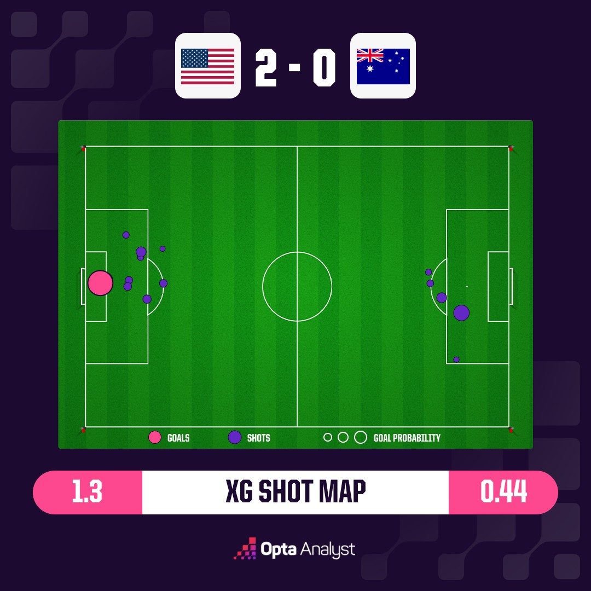
90+9'
FULL-TIME! The referee sounds the final whistle, and it’s all over. United States get the win, with a 2-0 triumph over Australia.
90+8'
Not much goalmouth action to speak of in this period of the game, with no attempts made from either side. This game could spark at any moment, however. It is Australia who have had more of the ball, controlling 56 per cent possession in the last 10 minutes.
90+8'
It's all hands on deck for United States as they defend their lead, making a wave of critical blocks and clearances
90+7'
Haji Wright makes a run in behind but the Australia defensive line were alert, and stepped up in time to catch them offside. That run just needed to be timed better.
90+6'
Substitution! Giovanni Reyna replaces Weston McKennie for United States as the manager shuffles the pack. Can Giovanni Reyna make an impression as this match continues?
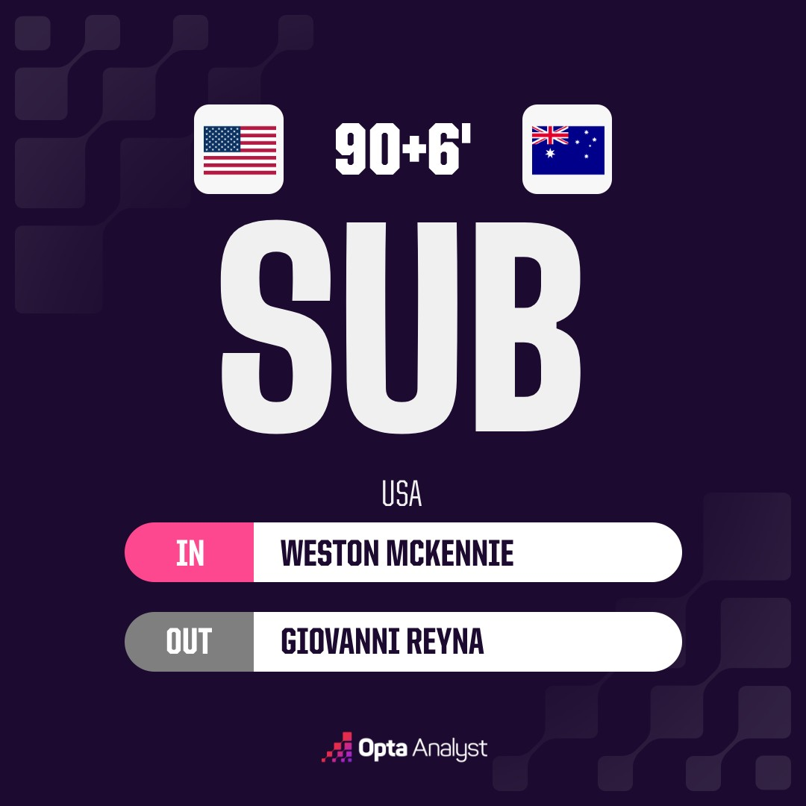
90+6'
Folarin Balogun’s match is over as United States decide to make a substitution. Haji Wright enters the field in what looks like a tactical change.
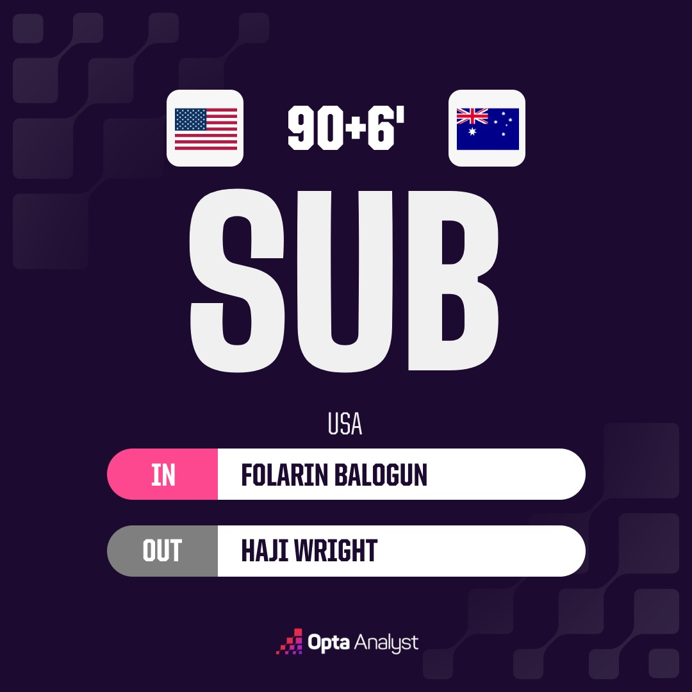
90+3'
That is a booking for Chris Richards, who has received their first yellow card. They are not happy with the decision, but it is done now, and they will have to be careful for the rest of this game.
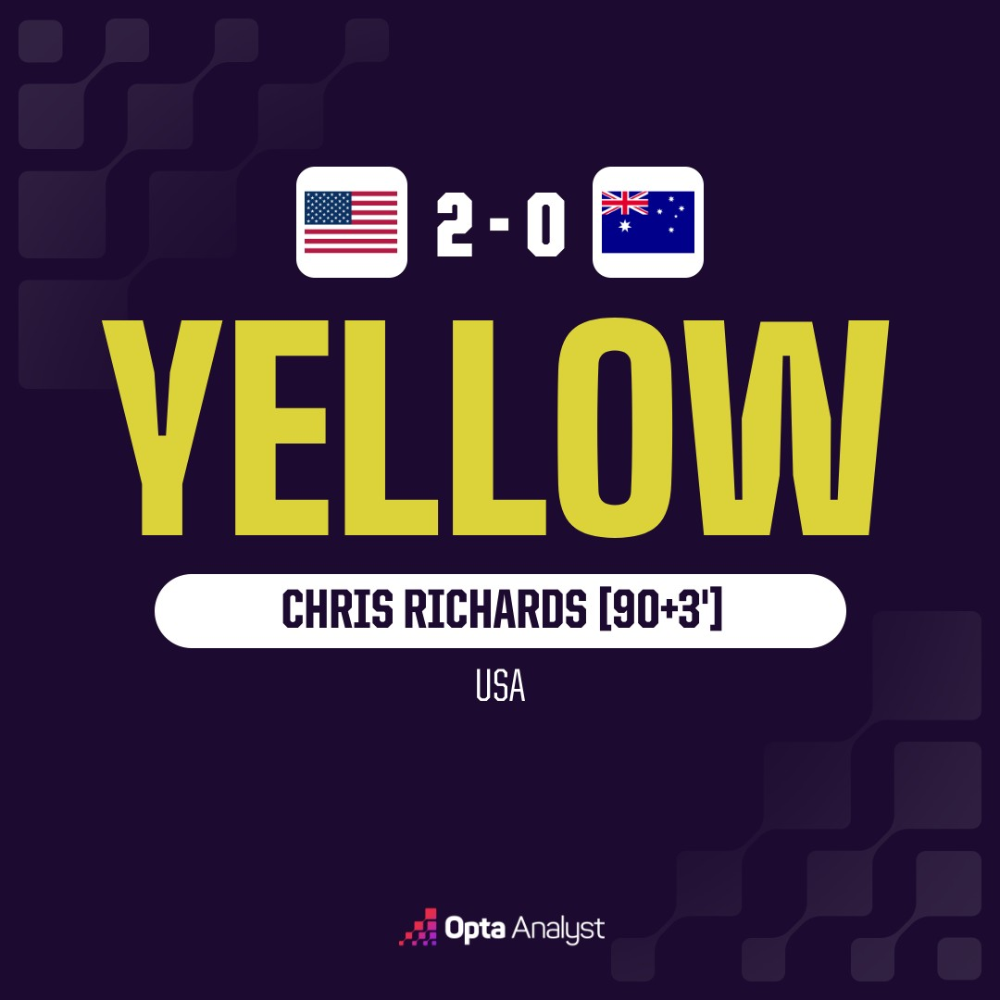
90+3'
A foul from Chris Richards on Nestory Irankunda sees Australia win a free-kick, but it is not in a dangerous position, so United States should be confident they can defend it easily enough.
90+3'
Still behind, but Australia are refusing to roll over - defensive urgency rising as they fend off more pressure and push for a late turnaround.
89'
A rash challenge from Nestory Irankunda, who sends Joe Scally tumbling, giving United States a free-kick. It is not in a threatening position, but it gives them a chance to get back on the ball.
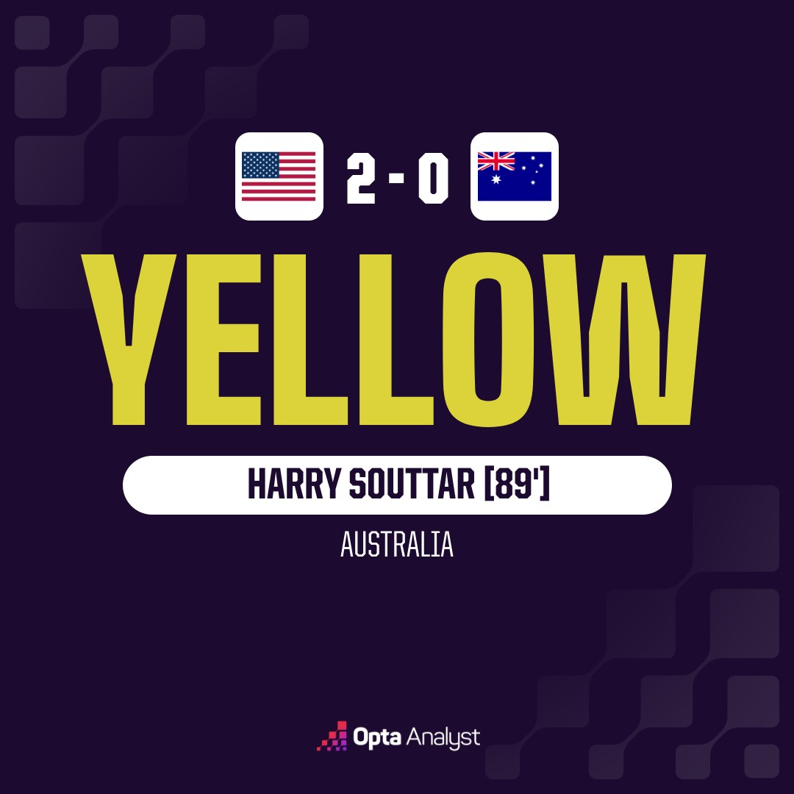
89'
The referee goes to their pocket and pulls out a yellow card, which is brandished in the direction of Jacob Italiano. Will they be able to avoid a second booking?
89'
The referee goes to their pocket and pulls out a yellow card, which is brandished in the direction of Folarin Balogun. Will they be able to avoid a second booking?
89'
A yellow card for Australia's Harry Souttar. They will have to walk a tightrope for the rest of this match, and United States will likely look to target them and draw a second bookable offence.
88'
A foul from Jason Geria on Malik Tillman sees United States win a free-kick, but it is not in a dangerous position, so Australia should be confident they can defend it easily enough.
88'
In the last 15 minutes, it is Australia who have dominated the ball, having seen 65.55% of the possession, yet they have not been able to go and turn that into a goal just yet, with their opponents standing firm.
87'
That is a disappointing effort from Alessandro Circati, who went for glory but got their attempt wrong, and the shot sailed off target. A frustrating moment for Australia.
87'
It's all hands on deck for United States as they defend their lead, making a wave of critical blocks and clearances
86'
A rash challenge from Folarin Balogun, who sends Harry Souttar tumbling, giving Australia a free-kick. It is not in a threatening position, but it gives them a chance to get back on the ball.
86'
Neither team has had a shot in the past 10 minutes, as this match just enters something of a down period. Australia have seen more of the ball, with 80 per cent possession, but United States are keeping them away from goal. There is still a chance the match will spark into life, though.
85'
Harry Souttar goes in on Chris Richards and concedes a foul. The free-kick is not in a particularly dangerous area from Australia’s viewpoint, though.
84'
Still behind, but Australia are refusing to roll over - defensive urgency rising as they fend off more pressure and push for a late turnaround.
83'
In the last 15 minutes, it is Australia who have dominated the ball, having seen 65.31% of the possession, yet they have not been able to go and turn that into a single shot, so there is no imminent sign of a goal.
82'
It’s backs to the wall now — United States throwing everything into defending their advantage, with a flurry of crucial interventions.
80'
United States are making a tactical change. Antonee Robinson is leaving the field and in their place comes Auston Trusty – we will soon see if this switch has the desired impact.
80'
A substitution for United States sees Sergiño Dest replaced by Joe Scally. There does not appear to be any obvious sign of an injury, so that is a tactical switch.
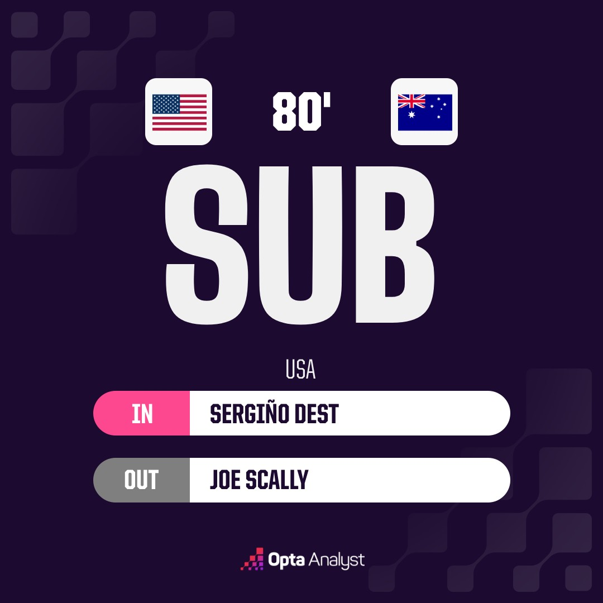
80'
A free-kick to United States, as Harry Souttar goes in and fouls Alex Freeman. However, Australia will not mind giving one away in this area too much, with plenty of distance to their goal.
78'
A substitution for Australia sees Paul Okon-Engstler replaced by Jackson Irvine. There does not appear to be any obvious sign of an injury, so that is a tactical switch.
76'
It’s backs to the wall now — United States throwing everything into defending their advantage, with a flurry of crucial interventions.
76'
There are 15 minutes plus added time to go in this match. United States have had more of the ball so far with a possession figure of 67.17%, while Australia have had 32.83%.
75'
This game is certainly in a bit of a lull now, with neither team having had an attempt at goal in the past 10 minutes. It could do with something to spark it into life. United States have had more possession during the quiet spell, but are yet to do much with it.
75'
A free-kick to United States, as Jason Geria goes in and fouls Folarin Balogun. However, Australia will not mind giving one away in this area too much, with plenty of distance to their goal.
74'
Substitution! Sebastian Berhalter replaces Ricardo Pepi for United States as the manager shuffles the pack. Can Sebastian Berhalter make an impression as this match continues?
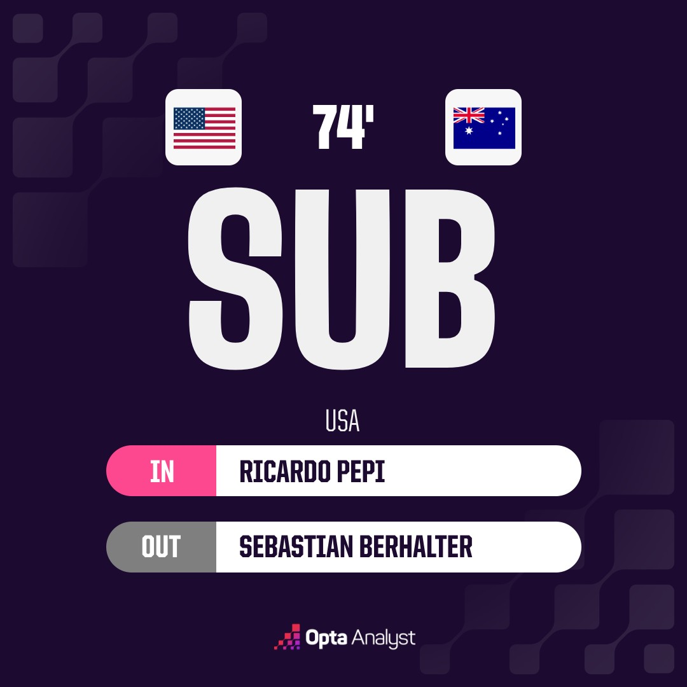
73'
A foul from Nestory Irankunda on Tim Ream sees United States win a free-kick, but it is not in a dangerous position, so Australia should be confident they can defend it easily enough.
71'
A free-kick to Australia, as Tyler Adams goes in and fouls Cristian Volpato. However, United States will not mind giving one away in this area too much, with plenty of distance to their goal.
66'
Still behind, but Australia are refusing to roll over - defensive urgency rising as they fend off more pressure and push for a late turnaround.
66'
It's all hands on deck for United States as they defend their lead, making a wave of critical blocks and clearances
66'
This match is into the last 25 minutes now, and before it goes into the final stages, let’s check on the shots. There have been 14 in total – 4 from Australia, and 10 from United States. Of those attempts, 4 have hit the target – 2 from Australia and 2 from United States.
65'
That was hopeful! A bit of a punt from Connor Metcalfe, who goes for goal from distance, but Matt Freese makes the save.
62'
That is a disappointing effort from Cristian Volpato, who went for glory but got their attempt wrong, and the shot sailed off target. A frustrating moment for Australia.
62'
Not much goalmouth action to speak of in this period of the game, with no attempts made from either side. This game could spark at any moment, however. It is United States who have had more of the ball, controlling 57 per cent possession in the last 10 minutes.
61'
An enforced substitution for Australia, as Mathew Leckie cannot carry on after sustaining an injury. Cristian Volpato has hastily warmed up and now made their way onto the pitch in Mathew Leckie's place.
59'
OVERTURNED! VAR has decided to intervene here, and after that comprehensive check, the referee’s decision has been overturned.
59'
We are going to VAR. The game has stopped for now with the assistant referee in the video booth now set to review the incident. Will the decision be altered?
59'
United States are having plenty of the ball, with 67.29% possession in the last 15 minutes. However, they have been unable to transfer that possessional dominance into a goal during that period.
56'
Yellow card! Antonee Robinson will have to be careful from now on after they are cautioned.
56'
A foul from Ricardo Pepi on Mathew Leckie sees Australia win a free-kick, but it is not in a dangerous position, so United States should be confident they can defend it easily enough.
53'
A wave of set-pieces for Australia as United States find themselves penned in. They’ll need to stay switched on to protect this lead.
53'
Despite trailing, Australia are showing real defensive grit, digging in and stopping further damage as they try to build a platform.
51'
United States win a corner after Folarin Balogun sees a shot diverted wide by Alessandro Circati. Can United States make this opportunity count, or will Australia defend this?
49'
A rash challenge from Alessandro Circati, who sends Sergiño Dest tumbling, giving United States a free-kick. It is not in a threatening position, but it gives them a chance to get back on the ball.
48'
Harry Souttar goes in on Folarin Balogun and concedes a foul. The free-kick is not in a particularly dangerous area from Australia’s viewpoint, though.
46'
The Australia manager is looking to the substitutes’ bench, bringing on Nestory Irankunda in place of Mohamed Touré. Will the change make a difference? Let’s find out!
46'
Cameron Burgess’s match is over as Australia decide to make a substitution. Jason Geria enters the field in what looks like a tactical change.
46'
The Australia manager is looking to the substitutes’ bench, bringing on Connor Metcalfe in place of Nishan Velupillay. Will the change make a difference? Let’s find out!
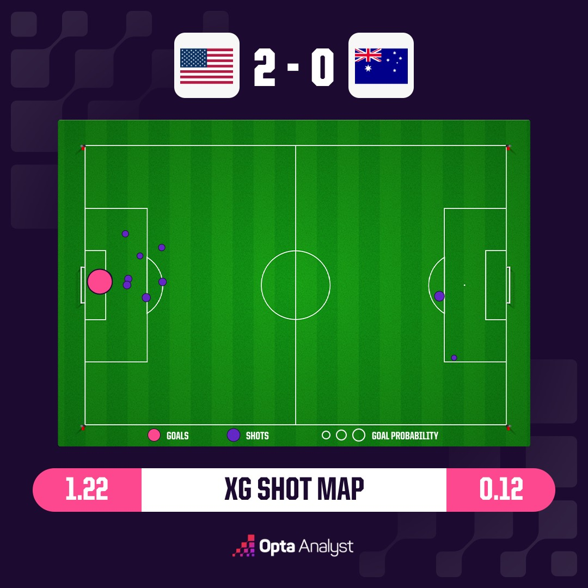
45+8'
Half-time! The referee blows the whistle and it is time for the interval. As we reach the break it is United States 2-0 Australia at Seattle Stadium.
45+7'
That was hopeful! A bit of a punt from Sergiño Dest, who goes for goal from distance, but Patrick Beach makes the save.
45+4'
A barrage of deliveries from Australia, who are pushing hard to force the equaliser.
45+4'
Weston McKennie goes in on Paul Okon-Engstler and concedes a foul. The free-kick is not in a particularly dangerous area from United States’s viewpoint, though.
45+3'
A foul from Chris Richards on Paul Okon-Engstler sees Australia win a free-kick, but it is not in a dangerous position, so United States should be confident they can defend it easily enough.
45+2'
A free-kick to Australia, as Ricardo Pepi goes in and fouls Alessandro Circati. However, United States will not mind giving one away in this area too much, with plenty of distance to their goal.
45+1'
VAR changes the decision! After a check, the video official believes the referee’s original call was wrong, and so the decision is overturned.
45+1'
VAR! The technology is now intervening – will the referee’s decision be overturned, or will it stand? Let’s wait and see.
43'
Alex Freeman! That is another goal for United States, who now lead 2-0! Is there any way back into this one for Australia? Their prospects look bleak, unless they can find a swift response.
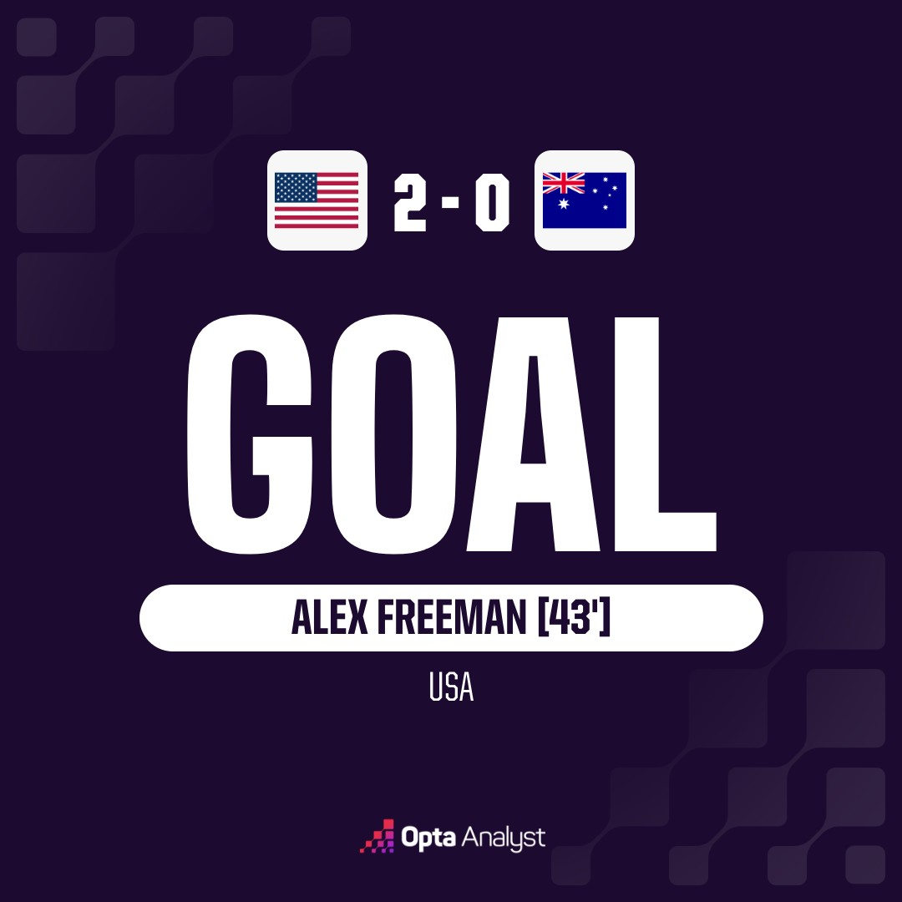
43'
BLOCK! An intervention from Harry Souttar might have just prevented a goal, with the defending player getting in the way of an attempt from Sergiño Dest. Solid defending there!
43'
Foul! A free-kick now in a dangerous area for United States, after Malik Tillman is fouled by Paul Okon-Engstler. Can United States make the most of this opportunity?
38'
MISS! The score remains 1-0, with Australia relieved after United States’s Ricardo Pepi goes for goal but sends their attempt off target. Not one to write home about, that one.
37'
Plenty of the ball in the last quarter-of-an-hour of this match for United States, but Australia have been able to hold them off with ease, with United States having failed to even muster a shot at goal.
36'
Despite trailing, Australia are showing real defensive grit, digging in and stopping further damage as they try to build a platform.
34'
A free-kick to United States, as Paul Okon-Engstler goes in and fouls Sergiño Dest. However, Australia will not mind giving one away in this area too much, with plenty of distance to their goal.
34'
Plenty of the ball in the last quarter-of-an-hour of this match for United States, but still Australia stand firm, despite having had only 34.35% of the ball in that period. Can United States make their possessional dominance count?
33'
A rash challenge from Chris Richards, who sends Aiden O'Neill tumbling, giving Australia a free-kick. It is not in a threatening position, but it gives them a chance to get back on the ball.
32'
Yellow card! Alessandro Circati will have to be careful from now on after they are cautioned.
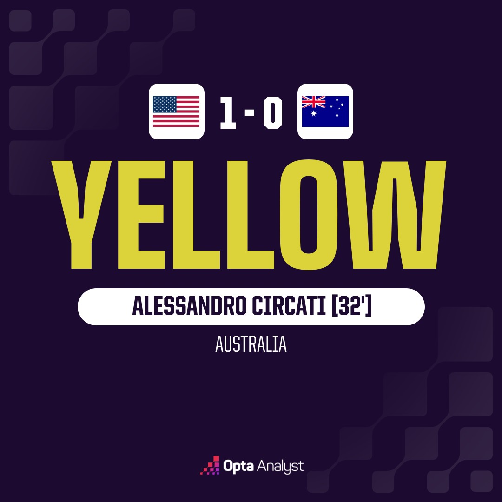
32'
Foul! A free-kick now in a dangerous area for United States, after Malik Tillman is fouled by Alessandro Circati. Can United States make the most of this opportunity?
32'
No goalmouth action for some time now, with neither team having had a shot in the past 10 minutes. Will there be a moment that changes things soon? United States have seen plenty of the ball, however, with 59 per cent of the possession in their favour during that period.
24'
A free-kick to United States, as Mohamed Touré goes in and fouls Matt Freese. However, Australia will not mind giving one away in this area too much, with plenty of distance to their goal.
23'
Can United States survive here? They will have some defending to do after the ball is turned behind for a corner kick. Will Australia take this opportunity and grab the goal they have been pushing for?
22'
BLOCKED! That was close. Folarin Balogun got off a shot, which was heading in, but Harry Souttar was on hand to make a vital intervention. Great block!
21'
United States's defense is looking formidable early on, calmly and authoritatively dismantling opposition attacks.
18'
A rash challenge from Weston McKennie, who sends Aiden O'Neill tumbling, giving Australia a free-kick. It is not in a threatening position, but it gives them a chance to get back on the ball.
17'
A chance goes begging as Weston McKennie gets off a shot that does not hit the target. They might have done better with that one, but instead it is a goal-kick to Australia.
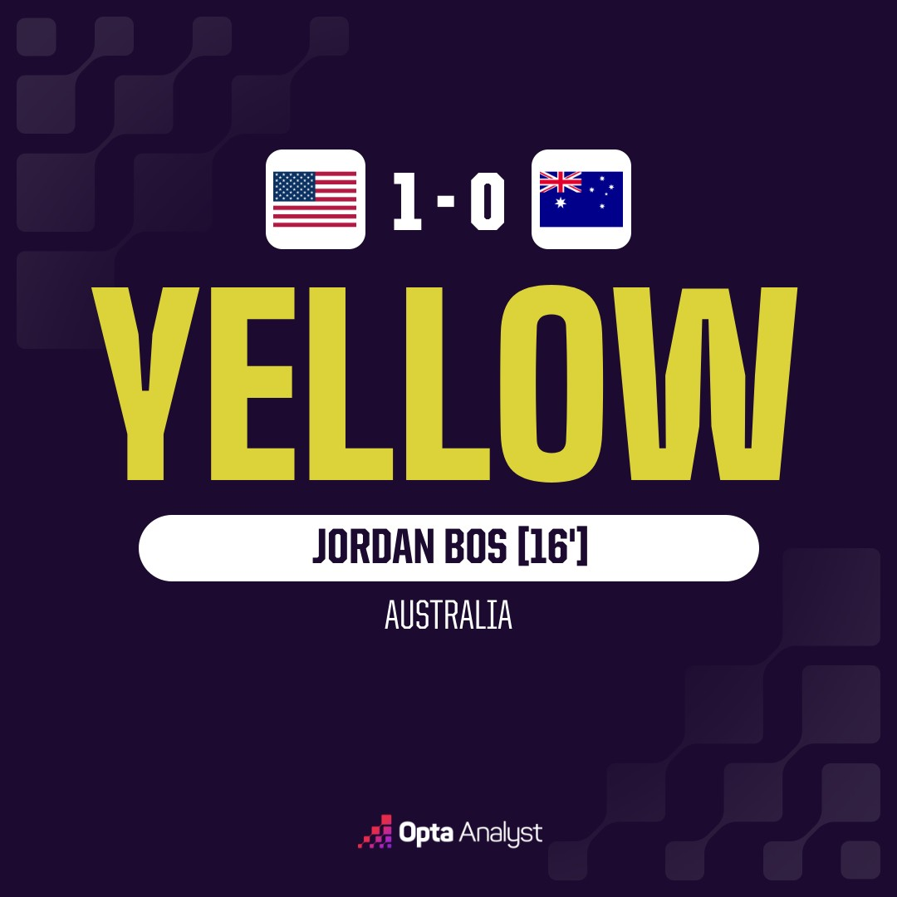
16'
That is a booking for Jordan Bos, who has received their first yellow card. They are not happy with the decision, but it is done now, and they will have to be careful for the rest of this game.
16'
Good play from Weston McKennie, who draws a foul from Jordan Bos to hand United States a free-kick in a dangerous position. Will they create something from this set-piece?
16'
A free-kick to United States, as Nishan Velupillay goes in and fouls Tyler Adams. However, Australia will not mind giving one away in this area too much, with plenty of distance to their goal.
15'
MISS! Weston McKennie fluffs their lines, and will United States be made to pay for that miss? Australia could have been down and out if that attempt had gone in, but at least they have not fallen even further behind in this contest.
12'
MISS! A shot from Mathew Leckie ends up being off target. They might have done a bit better with that one, but it remains Australia 0-1 United States.
12'
United States's defense is looking formidable early on, calmly and authoritatively dismantling opposition attacks.
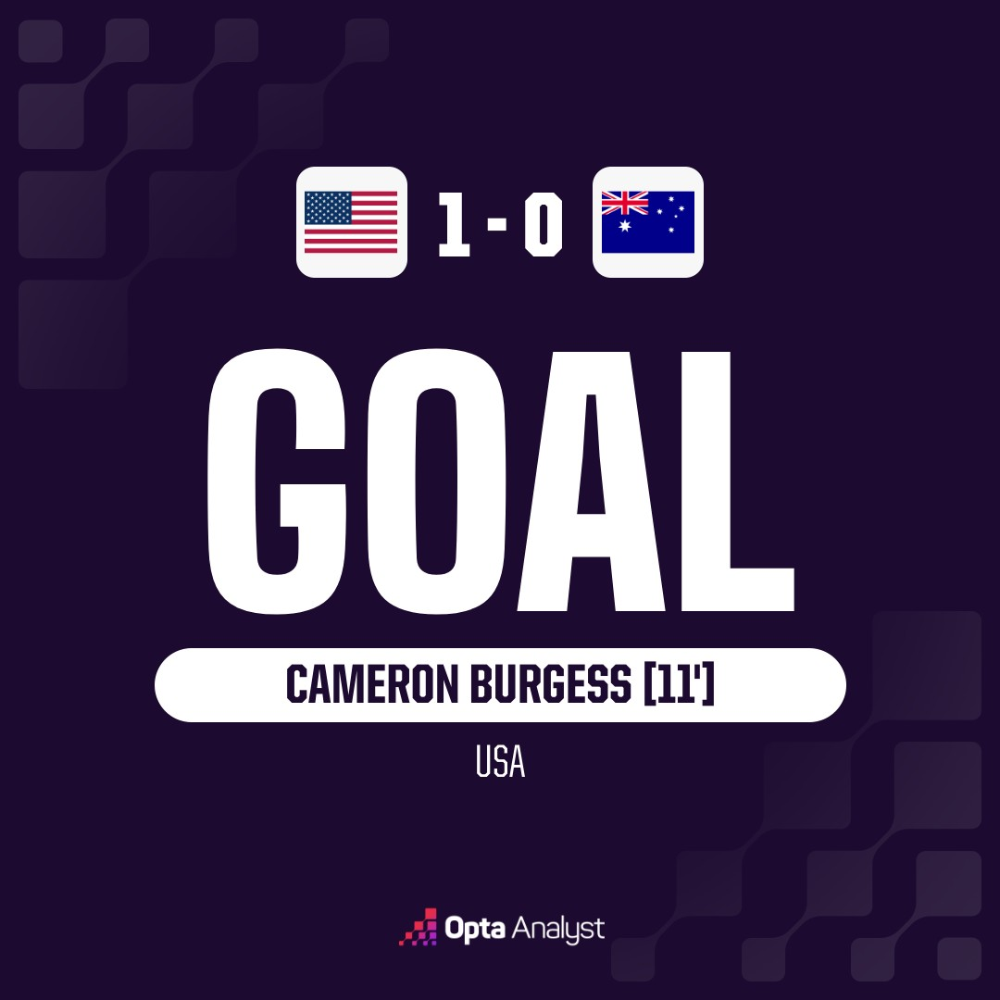
11'
Own goal! A shocking moment for Cameron Burgess, who has turned into their own net, putting United States ahead. That is a bit of good fortune for United States, but they now lead 1-0!
9'
Great block from Cameron Burgess, as they get in the way of an attempt from Sergiño Dest that might have been set to cause the goalkeeper some problems. Solid defending from the Australia player.
8'
Mathew Leckie goes in on Tyler Adams and concedes a foul. The free-kick is not in a particularly dangerous area from Australia’s viewpoint, though.
6'
A foul from Folarin Balogun on Aiden O'Neill sees Australia win a free-kick, but it is not in a dangerous position, so United States should be confident they can defend it easily enough.
5'
That might have been going in! A fantastic block from Alessandro Circati, who gets in the way of a goal-bound effort from Ricardo Pepi. Would the goalkeeper have been beaten? We will never know.
4'
A free-kick to Australia, as Weston McKennie goes in and fouls Aiden O'Neill. However, United States will not mind giving one away in this area too much, with plenty of distance to their goal.
4'
It’s been tight so far, and Australia are making sure it stays that way with strong defensive discipline and well-timed clearances.
1'
Chance! A shot from inside the area from Mohamed Touré was heading in, but Matt Freese makes a fine stop to keep it out. A big save from the United States shot-stopper!
1'
Up and running! Australia have kicked off and this FIFA World Cup match is now under way at Seattle Stadium. Let’s hope for an intriguing battle on the pitch.
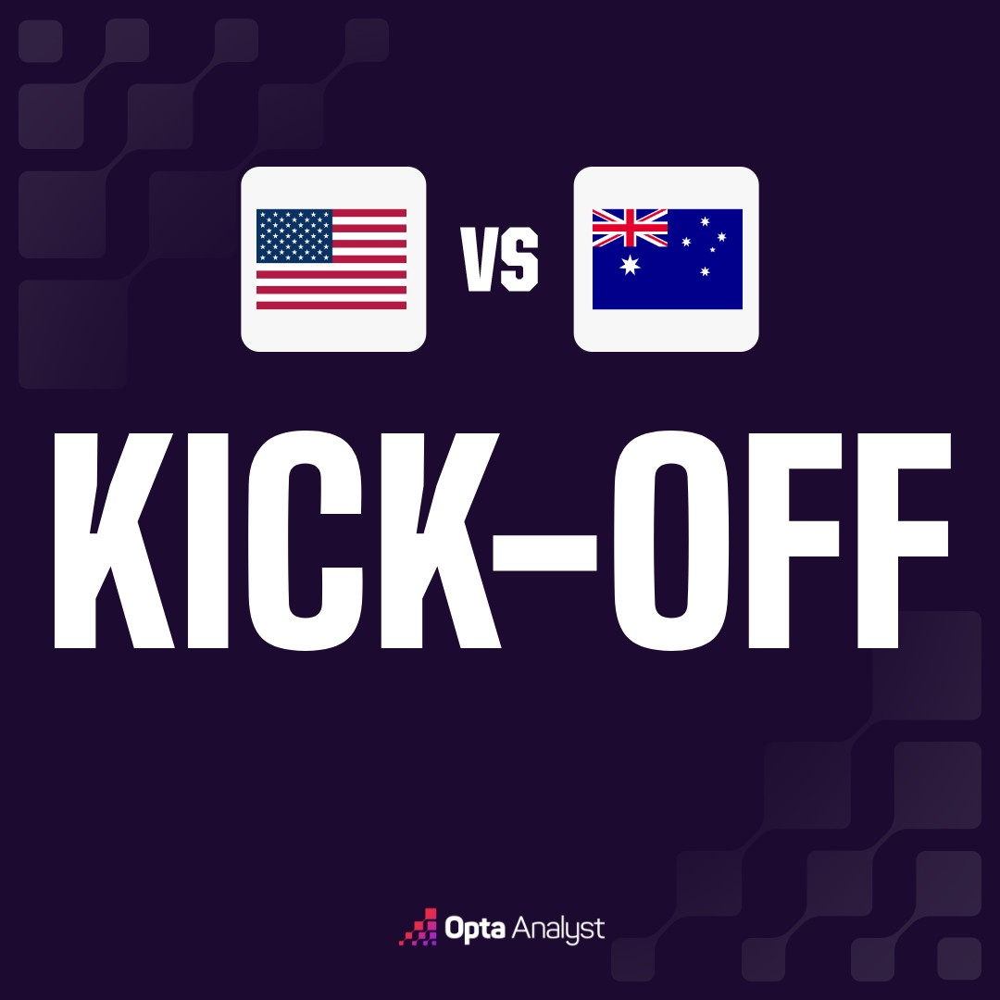
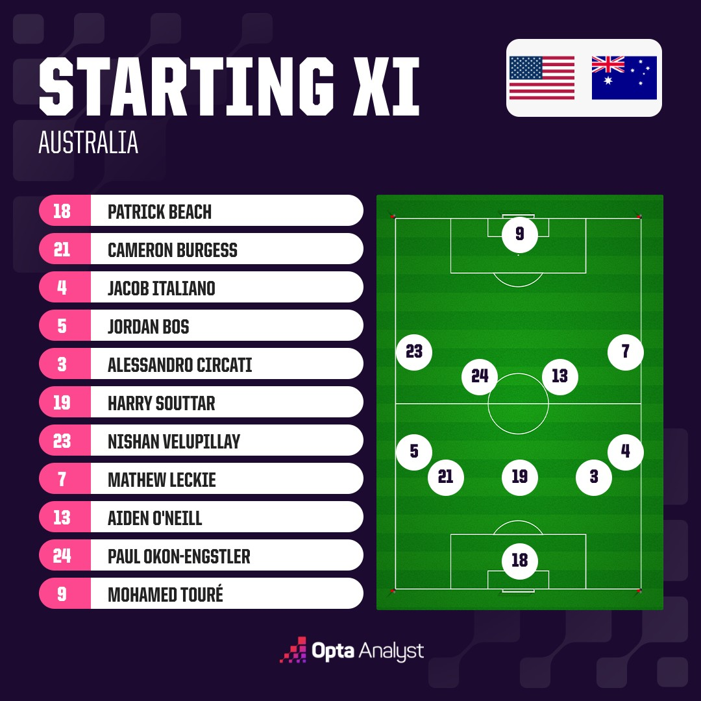
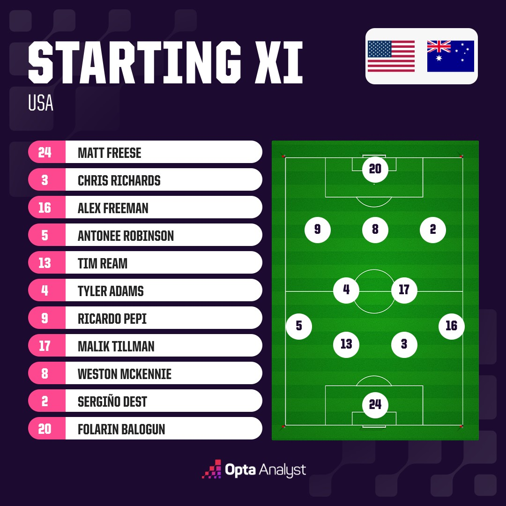
Australia have won their last 5 matches in a row
There have been 3 or more goals scored in total in each of United States's last 6 home games
There have been 3 or more goals scored in each of United States's last 5 games
The United States face Australia on Friday at Seattle Stadium in a meeting of teams who boast perfect starts early in the FIFA World Cup group stage.
The United States earned a 4-1 victory over Paraguay in their opening World Cup group stage match on June 12. Folarin Balogun caught the eye with a brace. In five games this year, they have two wins and three losses.
Australia won their opening World Cup group stage game on June 13, beating Türkiye 2-0 at BC Place Vancouver. Nestory Irankunda and Connor Metcalfe scored in the win. In 2026, they have won three, drawn one, and lost one.
The United States and Australia are first and second in the group, respectively, level on three points. Elsewhere in the group, Türkiye are sitting third on zero points. Paraguay are fourth on zero points.
The United States won the last meeting between the sides, coming out on top 2-1 in a friendly at Dick's Sporting Goods Park last October. Haji Wright led the USA side with goals in the 33rd and 51st minute. Jordan Bos scored the only goal for the Australian side in the 19th minute.
Balogun leads the United States in World Cup scoring after netting a brace against Paraguay. With goals against Türkiye, Irankunda and Metcalfe are the early leading World Cup scorers for Australia.
In their last six matches in all competitions, the United States have won three and lost three. The USA side scored 15 and conceded 13 in that period, scoring first in four of the six contests. A majority of their goals (11) came in the first half, while their opponents netted five times in the first 45 minutes. The Australian side have won three, drawn one and lost two in their last six. The Australian side scored nine and conceded six in that stretch, netting first in three of the six. They had two goals in the first half, while their opponents netted two times before the break.
-
General
Possession 61.9% 61.85638.14438.1% Possession lost in defensive half 35 354343 Possession lost in middle third 51 516060 Duels 126 126125125 Duels success rate 46.8% 46.82551.251.2% Aerial duels 42 424242 Aerial duels won 35.7% 35.71464.28664.3% Successful dribbles 11 111414 Fouls won 16 161212 Offsides 1 100 Corner awarded 7 744 -
Distribution
Passes 523 523310310 Long passes 59 594646 Long passes proportion (%) 11.3% 11.28114.83914.8% Passing accuracy 84.9% 84.89570.64570.6% Passes in opponents' half 279 279166166 Passing accuracy in opponents' half (%) 79.2% 79.21165.66365.7% Total passes in the final third 135 1358383 Passing accuracy in final third (%) 76.3% 76.29663.85563.9% Forward passes 299 299218218 Forward passes (%) 57.2% 57.1770.32370.3% Through balls 4 422 Final third entries 65 654343 Penalty area entries 21 212424 Total open play crosses 7 71515 Crosses 14 141919 Crossing accuracy 28.6% 28.57121.05321.1% -
Attack
Goals 2 200 Shots 10 1055 Shots on target 2 222 Blocked shots 6 600 Headed shots 4 400 Shots outside the box 2 222 Shots inside the box 8 833 Shots accuracy excluding blocked shots 50.0% 504040.0% Shooting accuracy 20.0% 204040.0% Key Passes 9 933 -
Defence
Tackles 20 201313 Tackles success rate 40.0% 4084.61584.6% Clearances 31 312424 Interceptions 20 2066 Recoveries 39 394444 Attacking third recovery 4 488 Defensive third recovery 17 172323 Midfield third recovery 18 181313 Recoveries in attacking half (%) 10.3% 10.25618.18218.2% -
Discipline
Fouls conceded 12 121616 Yellow cards 3 344 Red cards 0 000